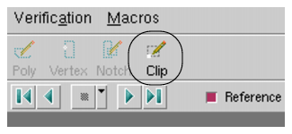
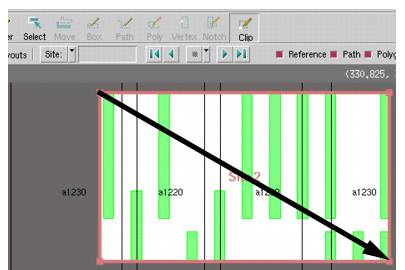

You
can use clips to mark and save coordinates for areas of interest
in a layout. The extracted areas are saved as a GDS layout. These
areas are useful in that they can be passed to others to focus work
on particular area or object.
Procedure
- Select Clip in the Layout Viewer toolbar.
Figure 1. Select Clip Mode
- Left-click and drag a box
over the region of interest in order to select a clip.
Figure 2. Select a Clip
- Select
the menu
item.
The Export
Layout dialog box allows you to generate a new layout with special
options or to change the layout format.
- In the Export Layout dialog
box, select “Write selected clip region from” and select your clip.
- In the Export Layout dialog
box, enter a different GDS filename if desired and then click Save.
The extracted region is saved
as its own GDS layout, and it can be loaded into the layout viewer.
- Optionally, to view a collection
of clips, you can use the Clips palette.
- Click the Clips tab in the Cells Browser.
This displays the Clips palette
containing clips made with the Clip tool.
- To preview
a clip, double-click the clip name in the Clips palette, and the
layout viewer zooms to the display the clip in the Layout Viewing Area.